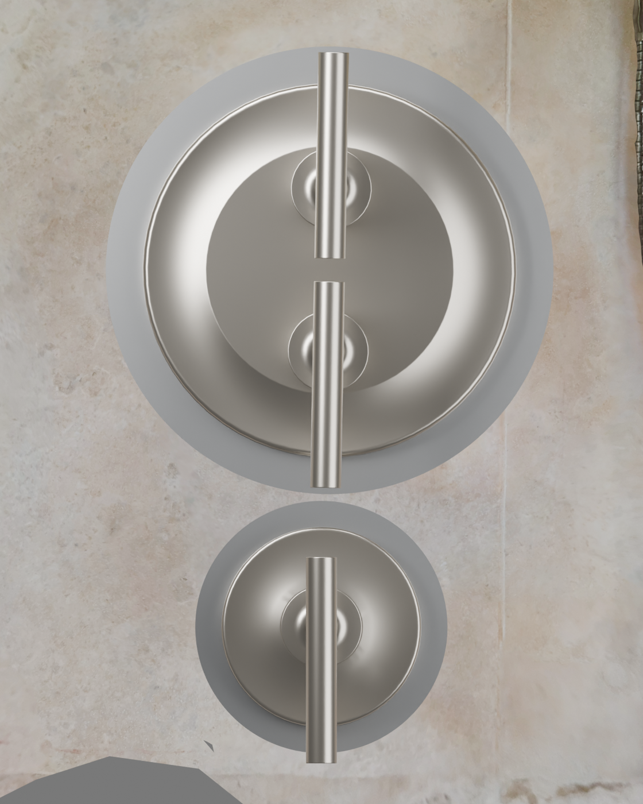
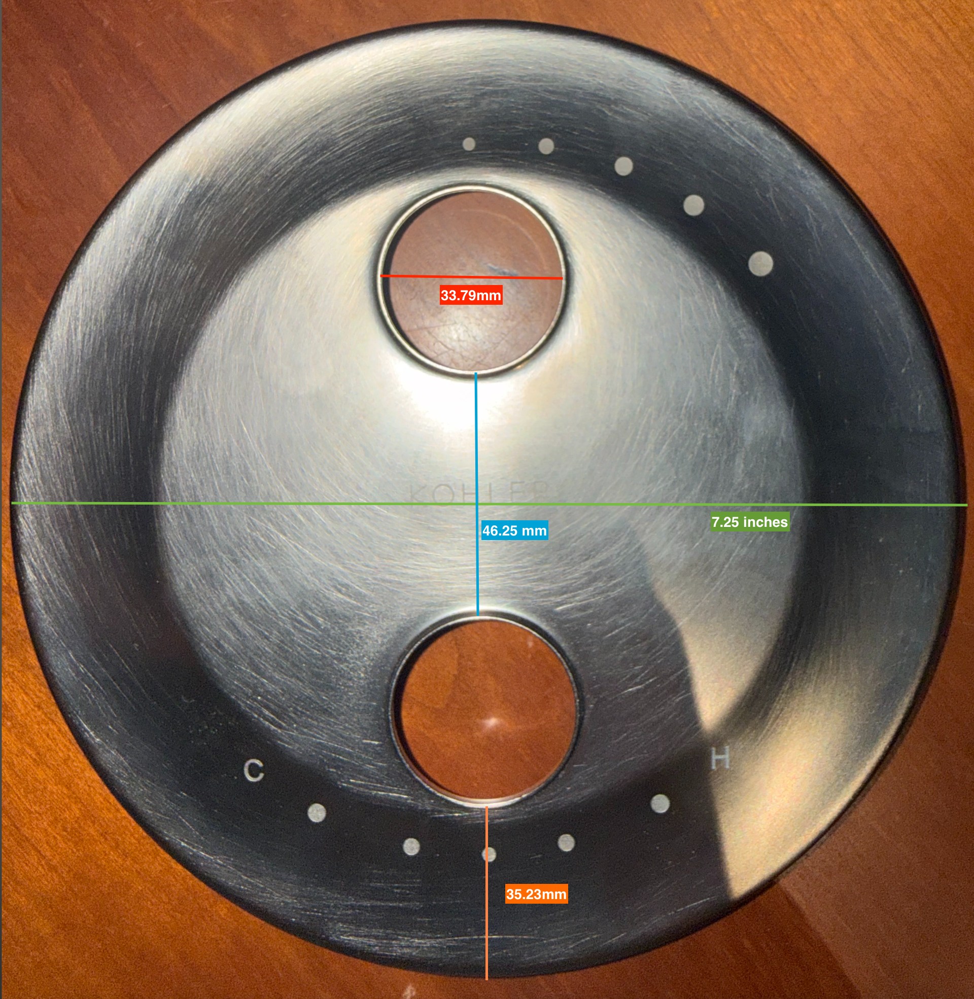

← FT02 project handoff
FIN01 · finish comparison · 17 October 2026
Coordinated silver, but an exact Kohler match is not established.
Your factory trim is Kohler Vibrant Brushed Nickel (BN). The recorded Ponoko metal quote uses #4 brushed 304 stainless, 1.52 mm. Both have a brushed silver appearance; their color, grain and reflections can differ where they meet.
My judgment: the pair can look deliberate and compatible on your travertine, with a visible border around each factory cover. If you want the new border to disappear into the original finish, an unseen sheet sample is not enough evidence to promise that.

Front: actual FT02 CAD dimensions and official Kohler exterior models on your scan-derived travertine. Finish and light are illustrative, not a measured color match.
These are appearance illustrations. The materials are representative shaders, not a photo of a received Ponoko part. Changing the lighting changes the apparent match. No physical finish, seating, support or seal has been approved by this render.
Reference pictures
These images were made under different lighting. Compare texture and character; do not treat their screen colors as a calibrated side-by-side test. The stainless close-up below is a supplier’s #4 example, not a photograph of Ponoko’s actual batch.

Your actual faceplate. Your supplied photograph, including the original measurement labels. Nearby wood and lighting affect the reflected color.
 Kohler’s product picture. Purist T14489-4-BN, identified by the manufacturer as Vibrant Brushed Nickel.
Kohler’s product picture. Purist T14489-4-BN, identified by the manufacturer as Vibrant Brushed Nickel.
 Representative #4 brushed stainless. Stainless Supply’s finish photo shows the directional sheet texture. Not a Ponoko color guarantee.
Representative #4 brushed stainless. Stainless Supply’s finish photo shows the directional sheet texture. Not a Ponoko color guarantee.
What the current Ponoko quote includes
The 16 October private quote record specifies #4 304 stainless. The main plate includes Linear Deburring; the diverter is As cut. It does not include a guaranteed Kohler BN color match or a uniform cosmetic finishing service for the pair.
Ponoko’s manufacturing standards say textured sheet may have one cosmetic face, cut edges are not polished, and as-cut metal may have scratches or burrs. Deburring is not a specification for matching the color and sheen of your Kohler trim.
Ponoko’s public generic 304 page describes #2B, a different stock finish. It should not be used as the appearance reference for the explicitly quoted #4 option.
My recommendation
- Keep clear acrylic as the first fit trial. It answers the geometry question; it does not predict the finished metal’s appearance.
- For the final metal, compare an actual #4 sample beside your existing cover in your shower light. Ponoko offers material samples; availability of this exact finish and thickness needs confirmation. No sample has been ordered.
- If that appearance is acceptable, specify the same visible face, grain direction and cosmetic treatment for both backing plates. Arrange the missing diverter edge finishing. A consistent pair will look more intentional.
- If the match must be very close, have a decorative-metal finisher evaluate your actual factory cover and a test coupon. Obtain an approved sample before treating a custom matching finish as solved. That work is not in the present quote.
Kohler describes BN as a gently textured silver finish that diffuses light: official finish reference. Stainless appearance varies with processing; Outokumpu’s surface guide illustrates this variation. No universal “brushed” label establishes a cross-brand match.